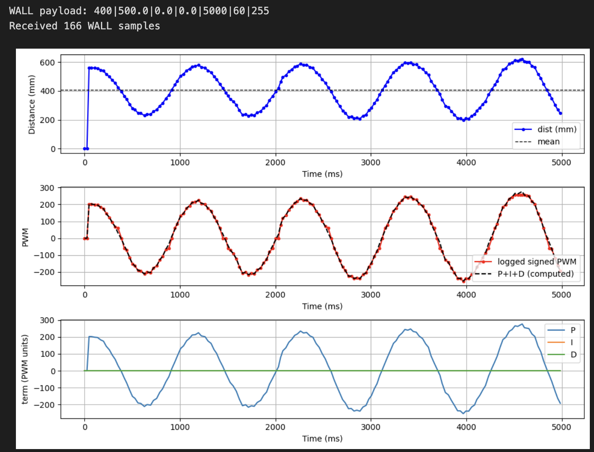
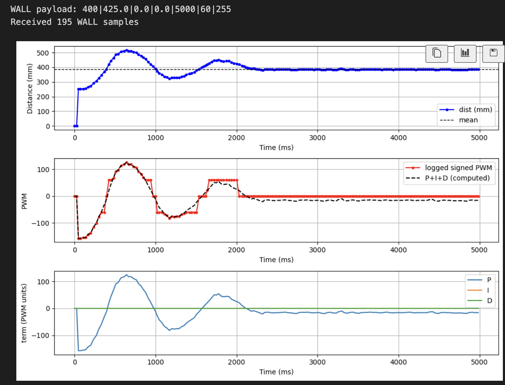
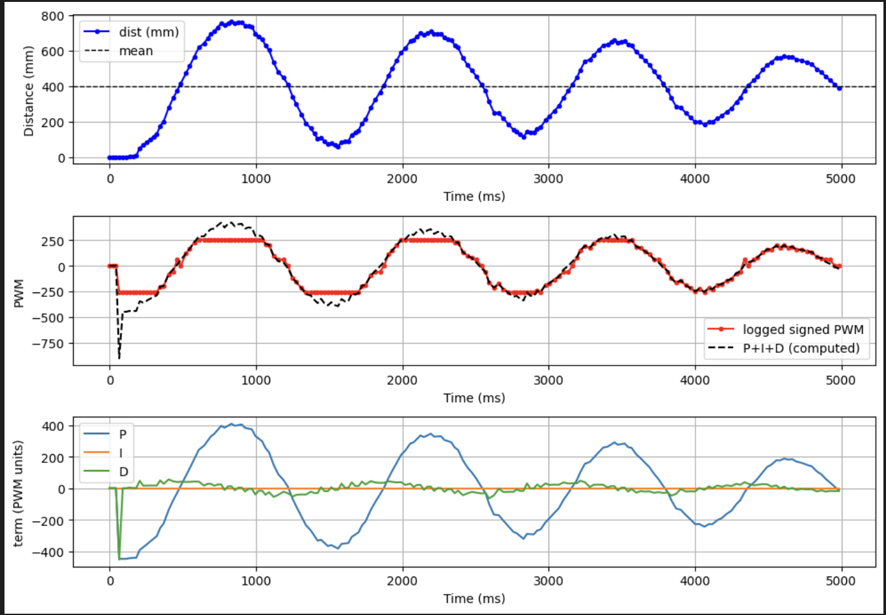
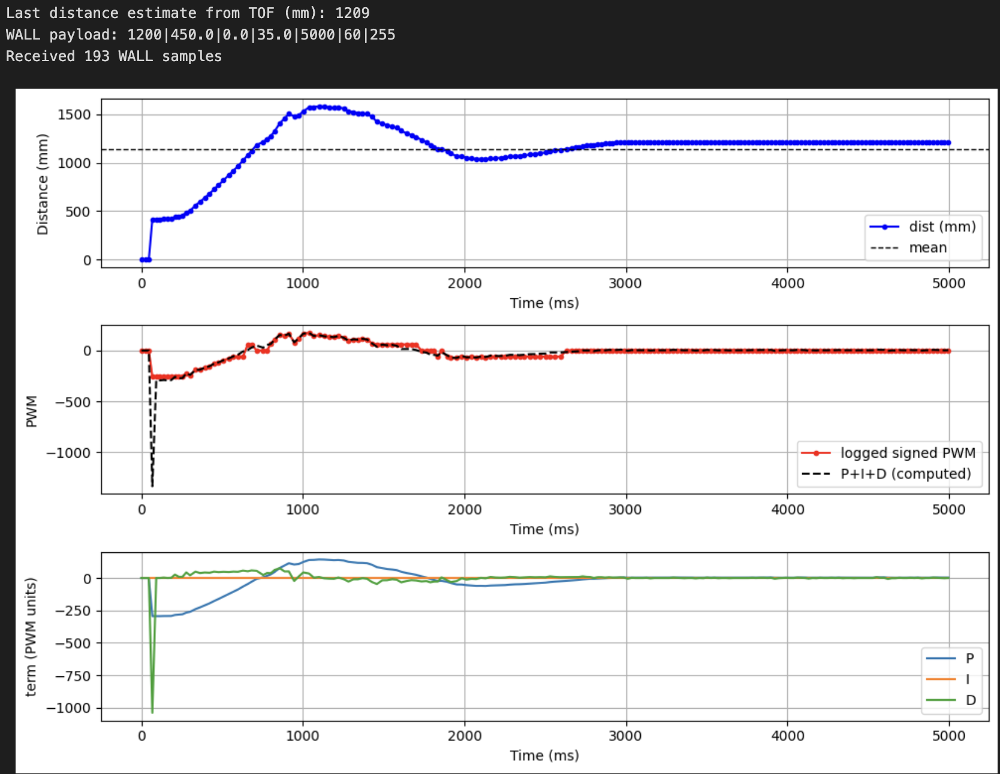
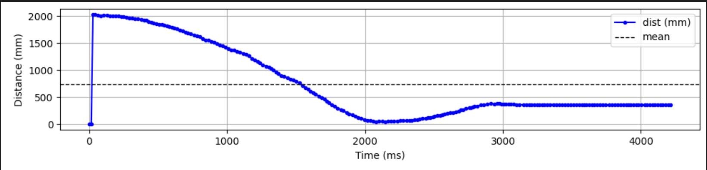
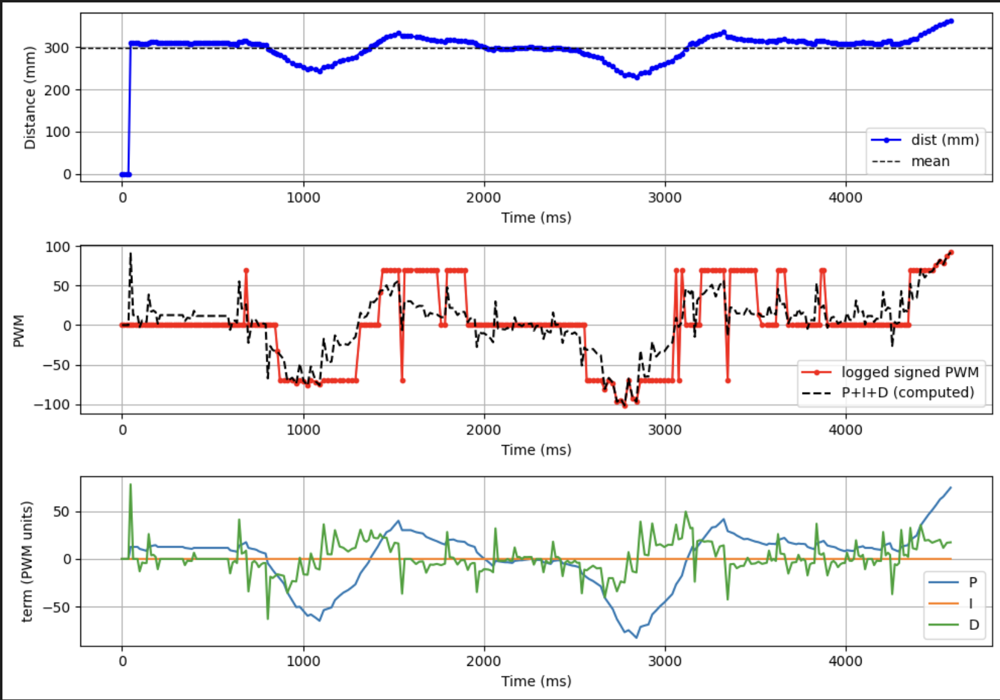

Lab 5: PID Wall Approach
Overview
This lab implements a PID controller that drives the robot toward a wall and stops at a target distance (~304 mm) using time-of-flight sensor feedback. Control is triggered and logged remotely over Bluetooth; the robot runs the PID loop on-board and sends logged data back for analysis. The report covers Bluetooth communication, data logging, position control, motor output mapping, PID tuning, range/sampling time, controller performance, robustness tests, integrator wind-up protection (5000-level), and the safety hard-stop mechanism.
If any media isn't working, you can view it using this link: https://github.com/cobylai/ECE5160/tree/main/assets/lab 5 .
Prelab — Bluetooth Communication
The robot control system was designed so that all experiments could be triggered and logged remotely over Bluetooth. A Python script running on the computer connects to the Artemis board using BLE and sends a command that starts the wall approach controller. The command payload includes the controller parameters such as the setpoint distance, PID gains, controller duration, and motor limits.
When the command is received by the Artemis, it parses the payload and activates the wall controller. During execution the robot runs the PID loop locally and stores debugging data in arrays. Logging locally ensures that Bluetooth communication does not slow down the control loop.
The robot records several values at each loop iteration including the timestamp, estimated distance to the wall from the ToF sensor, the normalized error used by the controller, and the signed motor command applied to the motors.
After the run finishes the Artemis sends all logged data back to the computer over BLE. The Python script subscribes to the notification characteristic, parses the received messages, and stores them in arrays for plotting and analysis.
To guarantee safe operation, the controller also includes a hard stop mechanism implemented directly on the Artemis. The control loop terminates once the specified duration has elapsed or if the controller state is disabled, and the motors are explicitly stopped so the robot cannot continue moving even if the Bluetooth connection fails.
// BLE_START_TRIGGER
void read_data() {
if (rx_characteristic_string.written()) {
handle_command();
}
}
case WALL_START: {
wall_active = true;
wall_stop_requested = false;
wall_log_count = 0;
}The debugging data collected during the run are transmitted back to the computer after the controller finishes. Each logged data point is formatted as a string and sent through the BLE characteristic so the Python program can reconstruct the experiment data.
// BLE_DATA_TRANSMISSION
for (int i = 0; i < wall_log_count; i++) {
tx_estring_value.clear();
tx_estring_value.append("WALL:");
tx_estring_value.append(wall_t_ms[i]);
tx_estring_value.append(",");
tx_estring_value.append(wall_dist_mm[i]);
tx_estring_value.append(",");
tx_estring_value.append(wall_err[i]);
tx_estring_value.append(",");
tx_estring_value.append(wall_pwm_signed[i]);
tx_characteristic_string.writeValue(tx_estring_value.c_str());
delay(10);
}On the computer side, the Python script receives these messages through a BLE notification handler. Each message is parsed and appended to arrays that will later be used to generate plots.
# PYTHON_BLE_RECEIVE
wall_t_ms = []
wall_dist_mm = []
wall_err = []
wall_pwm = []
def wall_notification_handler(uuid, byteArray):
raw = ble.bytearray_to_string(byteArray).strip()
if not raw.startswith("WALL:"):
return
rest = raw[5:]
parts = rest.split(",")
t_ms = int(parts[0])
dist = int(parts[1])
err = float(parts[2])
pwm = int(parts[3])
wall_t_ms.append(t_ms)
wall_dist_mm.append(dist)
wall_err.append(err)
wall_pwm.append(pwm)Data Logging
During the controller execution, debugging information is stored locally in arrays on the Artemis. These arrays hold the time of each sample, the estimated distance from the wall, the controller error, and the signed motor command.
// DATA_LOG_ARRAYS
static const int wall_log_len = 2000;
static int wall_t_ms[wall_log_len];
static int wall_dist_mm[wall_log_len];
static float wall_err[wall_log_len];
static int wall_pwm_signed[wall_log_len];
static int wall_log_count = 0;Each iteration of the control loop records the current values into the logging arrays. This ensures that all relevant information from the experiment is captured without interrupting the control loop timing.
// DATA_LOG_WRITE
if (wall_log_count < wall_log_len) {
wall_t_ms[wall_log_count] = now_ms;
wall_dist_mm[wall_log_count] = (int)lroundf(dist_est);
wall_err[wall_log_count] = error;
wall_pwm_signed[wall_log_count] = signed_pwm;
wall_log_count++;
}Position Control
The objective of this lab is to drive the robot toward a wall and stop at a target distance of approximately 304 mm. The robot uses feedback from a time-of-flight sensor to measure the distance to the wall and adjusts its motor output accordingly.
A PID controller is used to compute the motor command based on the difference between the measured distance and the target setpoint. The controller operates on a normalized distance error so that the gains remain consistent for different setpoints.
The proportional term generates a control effort proportional to the current error, which drives the robot toward the wall. The derivative term provides damping by responding to the rate of change of the error. The integral term accumulates small residual errors caused by motor deadband or friction and helps eliminate steady-state offset.
// PID_CONTROLLER
error = (dist_est - (float)setpoint_mm) / (float)setpoint_mm;
float integ_candidate = integ + error * dt_s;
float deriv = (error - prev_err) / dt_s;
float u_unclamped = kp * error + ki * integ_candidate + kd * deriv;
float u = u_unclamped;Motor Output Mapping
The PID output must be converted into a motor command that the driver can execute. The controller output is first clamped to the allowed PWM range. If the output magnitude is smaller than the motor deadband threshold, the command is raised to a minimum value so that the motors overcome static friction.
// MOTOR_OUTPUT_MAPPING
int u_pwm = (int)lroundf(u);
u_pwm = clamp_int(u_pwm, -max_pwm, max_pwm);
if (u_pwm != 0 && abs_error > deadband) {
int mag = u_pwm > 0 ? u_pwm : -u_pwm;
if (mag < min_pwm) u_pwm = (u_pwm > 0) ? min_pwm : -min_pwm;
}PID Tuning
The controller gains were tuned experimentally by observing the robot’s response under different parameter settings.
When the proportional gain is too low the robot approaches the wall very slowly and does not effectively reduce the error. This behavior is shown in the first graph.

When the proportional gain is too high the controller overreacts to the error and causes oscillations near the setpoint.

If the derivative gain is too small the system becomes underdamped and continues oscillating around the setpoint before settling.

After tuning the controller gains, the system approaches the wall quickly and settles smoothly near the desired setpoint.

Range and Sampling Time
The robot measures distance using a VL53L1X time-of-flight sensor configured in short-range mode. Short-range mode provides faster update rates which improves controller responsiveness when approaching the wall.
// TOF_CONFIGURATION
distanceSensor1.setDistanceModeShort();
distanceSensor2.setDistanceModeShort();The PID control loop runs at approximately 50 Hz, corresponding to a loop period of about 20 ms. The ToF sensor produces measurements at a slower rate determined by its internal integration timing. When a new sensor measurement becomes available it is used to update the distance estimate; otherwise the controller continues using the most recent estimate.
Running the control loop faster than the sensor update rate reduces the effect of sensor latency and allows the controller to react more quickly to changes in the robot’s motion.
Robustness Demonstration
To demonstrate reliability, the robot was tested under several conditions. In one experiment the robot started far from the wall, while in another it started much closer. In both cases the controller successfully drove the robot to the target distance.
A perturbation test was also performed in which the robot was pushed toward or away from the wall during operation. The controller responded by adjusting the motor output and returning the robot to the desired setpoint.


5000-Level Requirement — Integrator Wind-Up Protection
Integrator wind-up occurs when the integral term continues accumulating error while the actuator output is saturated. Because the motor command cannot exceed its maximum value, the integrator may grow very large and cause excessive overshoot once the system becomes responsive again.
To prevent this behavior the controller includes an anti-windup mechanism that limits when the integral term is updated. If the controller output is already saturated and the error would push the output further in the same direction, the integrator update is temporarily disabled. This prevents the accumulation of large integral values while the motors are operating at their limits.
// INTEGRATOR_WINDUP_PROTECTION
bool saturated_high = (u_pwm >= max_pwm);
bool saturated_low = (u_pwm <= -max_pwm);
bool pushing_high = (u_unclamped > (float)max_pwm && error > 0.0f);
bool pushing_low = (u_unclamped < (float)(-max_pwm) && error < 0.0f);
bool allow_integ = true;
if ((saturated_high && pushing_high) || (saturated_low && pushing_low)) {
allow_integ = false;
}
if (allow_integ) {
integ = integ_candidate;
}This strategy improves controller stability by preventing the integral term from dominating the controller output when the motors are already saturated.
Safety Mechanism
The controller also includes a safety mechanism that ensures the robot stops after the specified duration or if the controller is disabled. When the control loop exits, the motors are immediately stopped to prevent unintended motion.
// SAFETY_HARD_STOP
while (wall_active && !wall_stop_requested &&
(millis() - start_time) < (unsigned long)duration_ms) {
BLE.poll();
delay((unsigned long)poll_time_ms);
}
wall_stop_requested = true;
wall_active = false;
motors_coast();